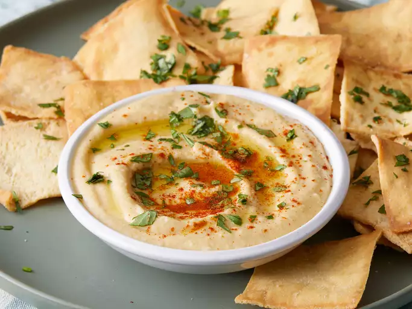

Gather all ingredients. Blend chickpeas, lemon juice, olive oil, garlic, cumin, salt, and sesame oil in a food processor.
Stream reserved chickpea liquid into the mixture as it blends until desired consistency is achieved.
Serve with pita chips or veggies